For Issuers - Create and manage presentations¶
1. Starting a new project, a presentation¶
On accessing Shownode, you will land on this page. This where you can see a listing of presentations you have access to (see: For Investors - Access and navigate presentations), and can start new ones.
1.2 New project!¶
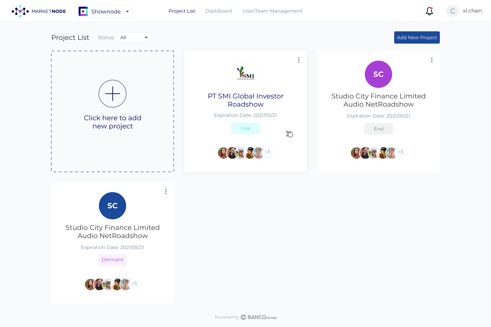 Click on ‘Start new project’ on the top right button to initiate a new project where you will go thru steps to create a presentation.
1.3 Setup project information¶
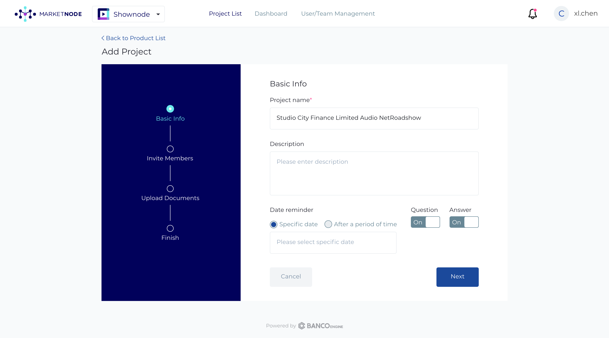 Enter project information:
Name your project
Describe your project
Set a reminder date to close off the presentation
Manage the Q&A module, turn it on or off
If preferred, can choose to take questions only and turn-off answers Note: If Questions are turned off, Answers will be unavailable
1.4 Add project members¶
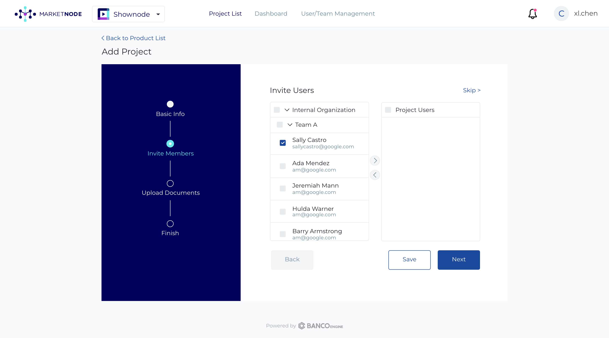 Add other team members to the to the presentation:
Add individual team members by their email address (incld. any dealers contributing to the project)
Create a team by grouping together email address of different team members if frequently working on projects togethers
1.5 Upload project¶
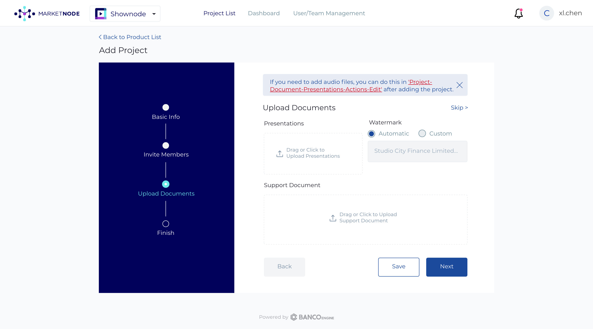 Upload the presentation and other supporting documents:
Drag and drop or upload the presentation file from your directory (Supported format: .pdf)
In addition to the presentation, you may choose to drag and drop or upload supporting documents from your directory
You can create a watermark to protect the presentation against unauthorized screen capture and distribution; default watermark will display the investors’ email and IP address on the presentation
If you prefer, you may skip this step and upload your presentation later. Note: A project cannot be set as live if there is no presentation uploaded
1.6 Success!¶
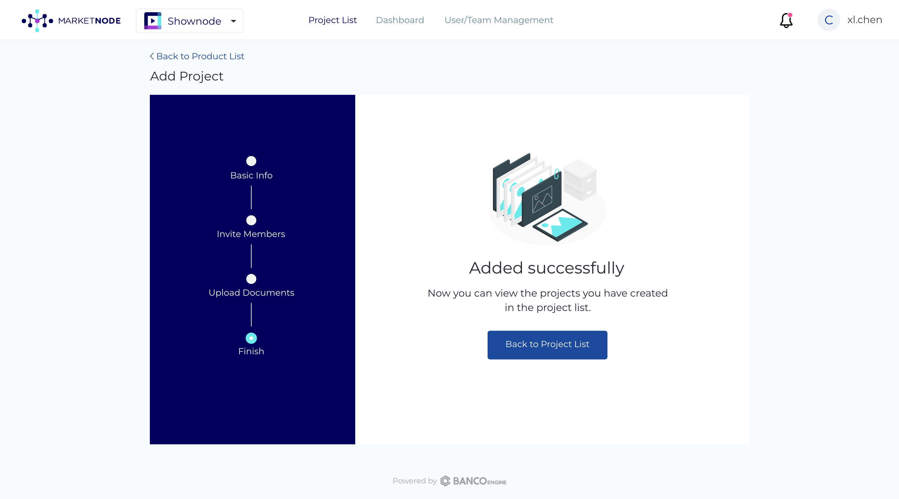 Congratulations, you have successfully created a project!
2. Managing your project, the presentation¶
Once you’ve successfully created the a project, you can start to manage it.
2.1 Project overview, analytics¶
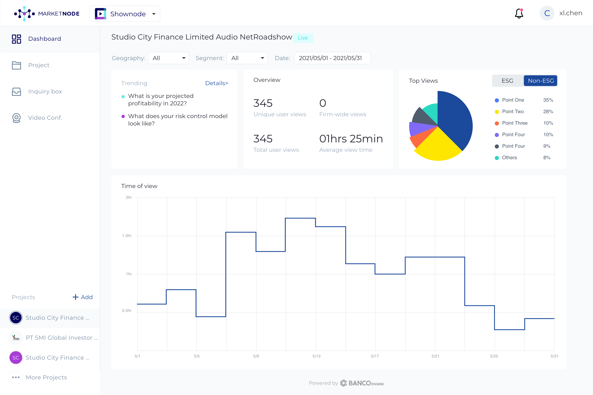 Navigating to the Project Overview page will give you real-time, running analytics of a live presentation:
Navigate between overviews of different projects that you have created
Adjust the filters here to get a more targeted, granular slice of information on the dashboard
Filter dashboard analytics by Geography; Regions, Country
Filter dashboard by the investor Segment, i.e. insurance, asset managers, family offices, etc.
Toggle between these tabs for a view or all investors or ‘ESG’ focused ones only
You may also create a new project by clicking on ‘+Add’
2.2 Manage Project - Project details¶
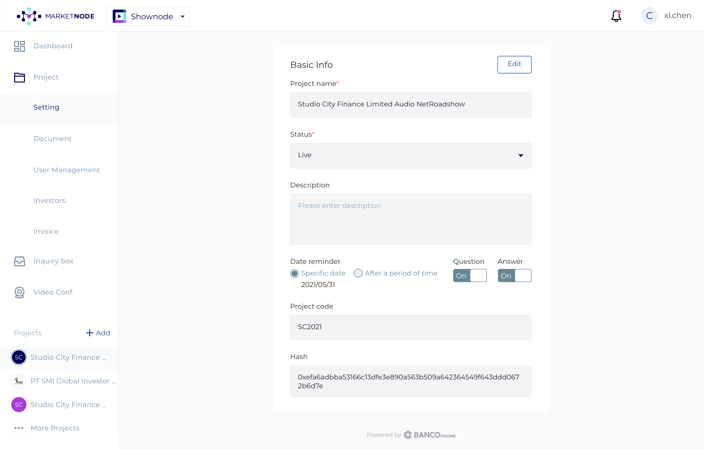 Under Manage Projects, you can navigate to Project details to edit project details and control the status of your project (tip: important!).
Click on ‘Edit’ to update your project setup details such as name, description, project duration reminder, and the use of the Q&A module
The status of the project can be controlled here:
Private: This is the default status for new projects, a safe state for the project team to setup the presentation. The project is only accessible by the project team and cannot be accessed by others even with a deal code that was circulated before
Live: Changing the status to live will make it accessible by any user that has a deal code for that project
Closed: Changing the status to closed will signal that the project team wishes to end the project. It will no longer be accessible by users with the deal code and Marketnode support will reach out to you to initiate the billing process
In the Deal code text field, enter your desired deal code for the project. Distribute this deal code to dealers, platforms, and investors to grant them access to the presentation in this project
2.3 Manage Project - Presentation documents¶
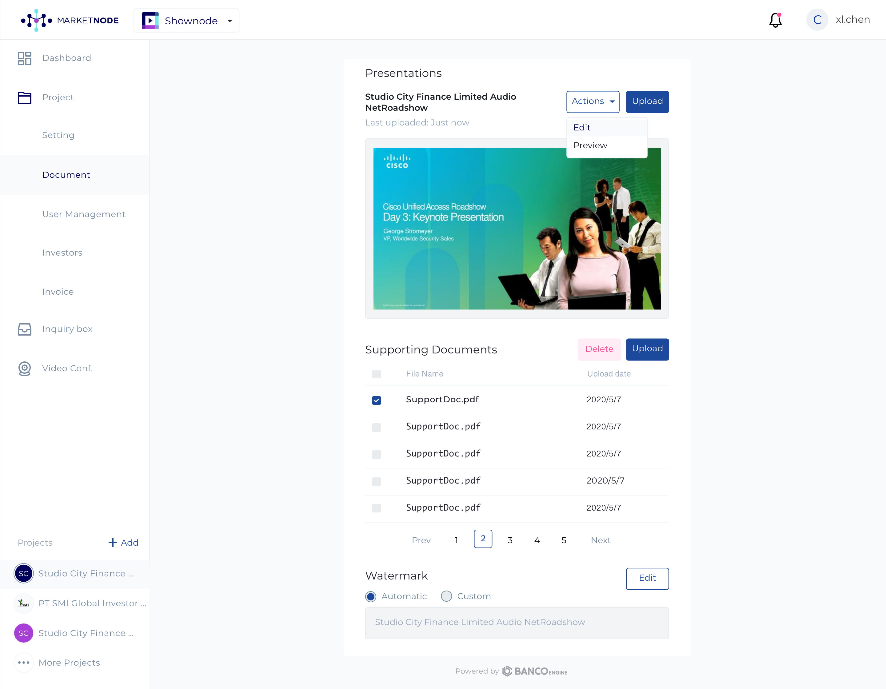 Under Manage Projects, you can navigate to Project details to preview and manage the presentations and supporting documents that have been uploaded. If you’ve not uploaded the documents during project setup, you may do so here.
Click on Upload to upload your presentation and supporting documents. *Note: There can only be one presentation document at time, uploading will overwrite the previously uploaded version.
Click on Preview to open up a preview of the uploaded presentation, see next section below
Click on Edit if you wish to update the watermark; as before you may use an automatically generated one (displaying the user’s email and IP address) or customize one for your project
2.3.1 Preview¶
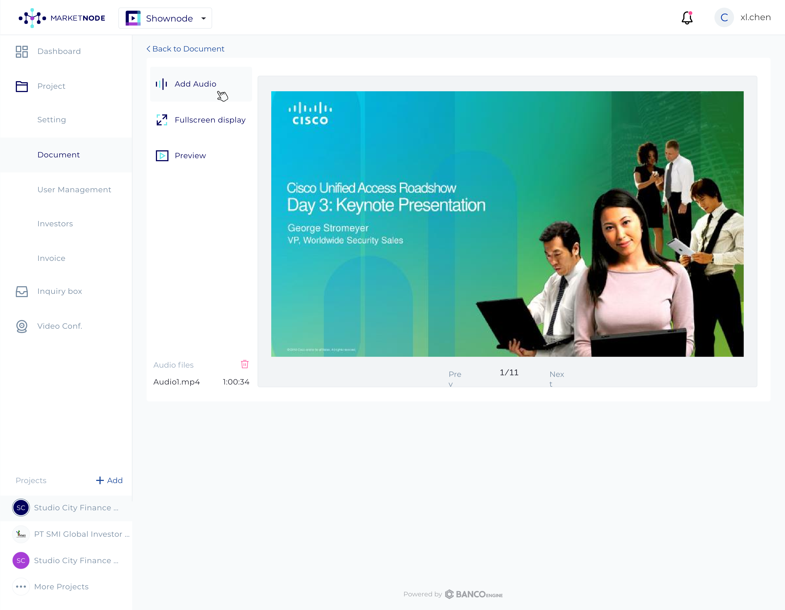 In the the Preview view of the presentation
Click on Add Audio to upload an audio clip for each slide of the presentation (Supported formats: .MP3, .M4A, .WAV)
Click on Fullscreen display to display the presentation in fullscreen
2.4 Manage Project - User management¶
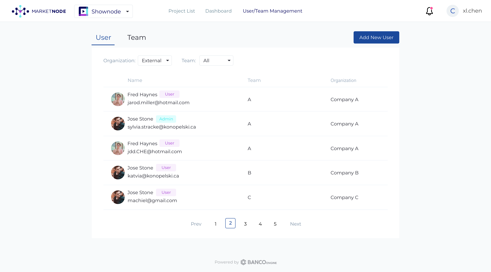 Under Manage Projects, you can navigate to User Management to manage the individual users and the team working on the project.
Click on an existing user profile to edit that user’s permissions
Click on Add New User to add a new user to the project, see section below
If you have created a team click on Team to manage the team
You can filter the list according to Organization or Team
2.4.1 Change user permission - Admin only¶
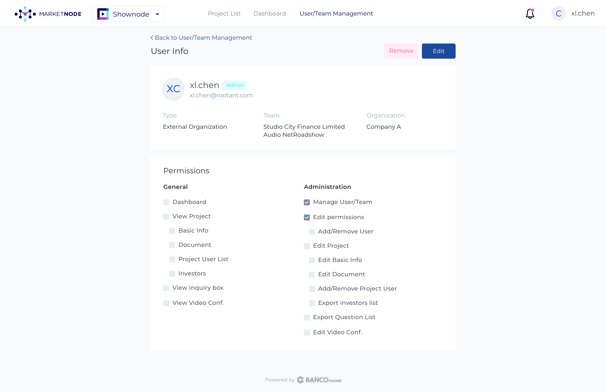 After clicking on an existing user profile, click on Edit and assign/unassign permissions using the checkboxes
2.4.2 Invite new user¶
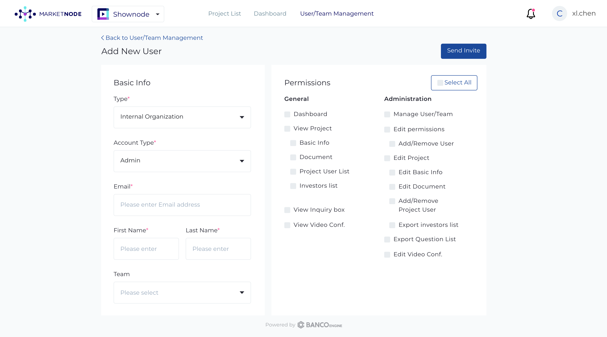 After clicking on Add New User, you can send an invitation to another user
Input the invitee’s email address into the Email text field
You can use to included the new user in any teams that you have pre-created
You can manage the permissions of that incoming user as well
2.4.3 Managing teams¶
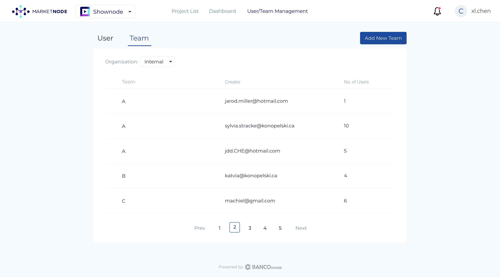 After clicking on Teams you can create and manage teams, groupings of individual users.
2.5 Manage Project - Investor List¶
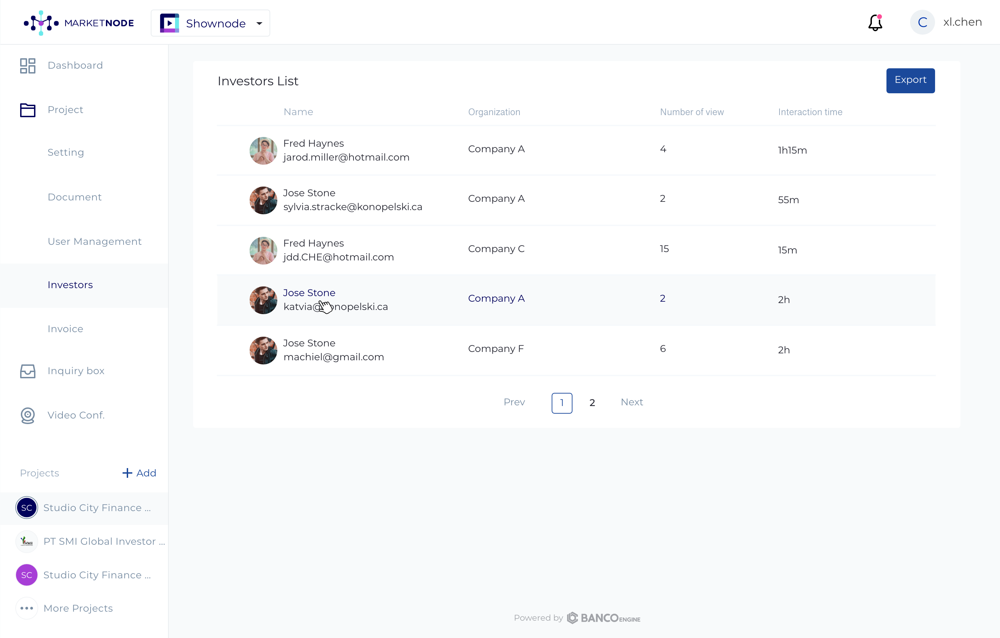 Under Investor List, you can access a list of investors accessing your presentation, displaying their profile information but also how many times they’ve viewed your presentation and how long they have interacted with it
You can download a .csv file of this list by clicking on Export
2.6 Q&A box¶
![[Snode-issuer-prj-q&a.png]](_images/Snode-issuer-prj-q&a.png) Under Q&A box, you can access a list of questions being asked about your presentation with a details of that particular question i.e. how many investors are ‘following’ that question, when was it asked, which investor had asked it, and whether or not you response is pending
Under Q&A box, you can access a list of questions being asked about your presentation with a details of that particular question i.e. how many investors are ‘following’ that question, when was it asked, which investor had asked it, and whether or not you response is pending
To answer a question, please click on Answer.
Once a question has been answered you can click on Detail
You can download a .csv file of this list by clicking on Export
2.6.1 Answering a question, viewing your response¶
![[Snode-issuer-prj-q&a-answer.png]](_images/Snode-issuer-prj-q&a-answer.png) Fill in your response in the text field and click on Submit
Fill in your response in the text field and click on Submit
![[Snode-issuer-prj-q&a-details.png]](_images/Snode-issuer-prj-q&a-details.png) Click on Edit to change your response to the question
Click on Edit to change your response to the question
2.7 Video Conf.¶
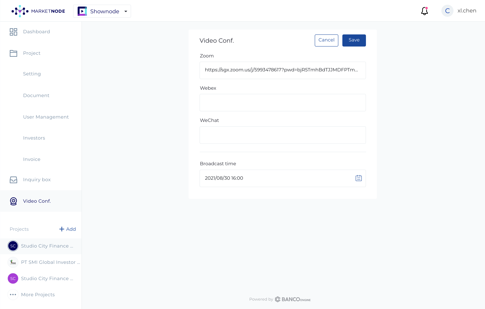 Under Video Conf., you can post a meeting link of your prefered video conferencing application for investors to access
Past the link from your video conferencing application here
Input the the broadcast timing of your video conference